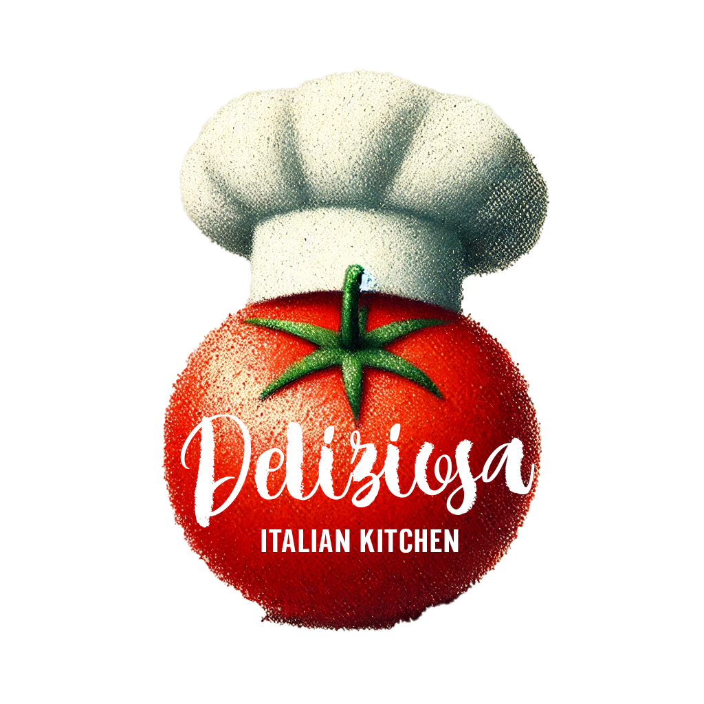

Meet Chef Luca Romano

Chef Luca Romano brings over 25 years of experience, crafting authentic Italian dishes that tell the story of his hometown, Florence. Passionate about fresh ingredients and traditional techniques, Luca’s menu offers a true taste of Italy. His warm and inviting personality has made him a beloved figure in our restaurant, ensuring that every guest feels like family.
When he’s not in the kitchen, Chef Luca loves sharing his love for Italian cuisine with the community, hosting cooking classes, and exploring local markets for the freshest ingredients.
Chef's Specialties
- Homemade Pasta: A timeless favorite made fresh daily with a variety of delicious sauces.
- Wood-Fired Pizza: Perfectly crisp crust with toppings made from the finest ingredients.
- Classic Italian Dishes: Lasagna, osso buco, and more, all made with love and tradition.